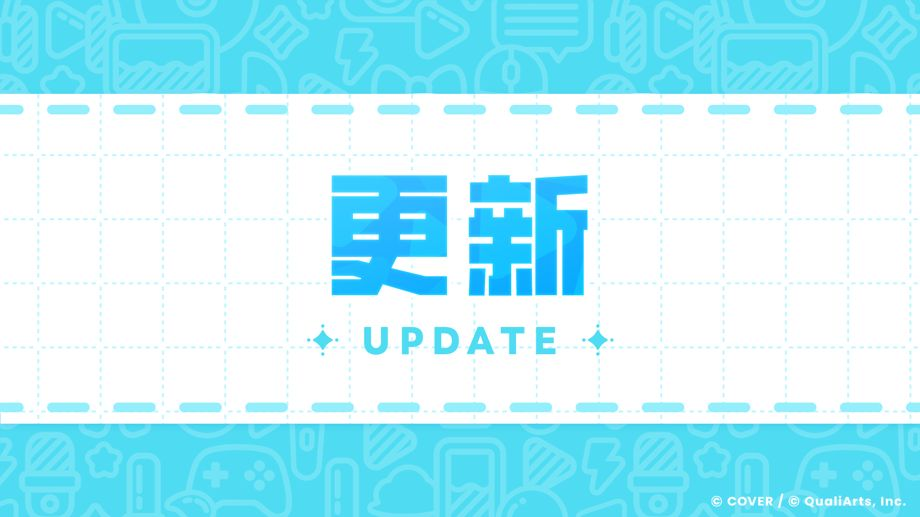

非常感谢您的支持。
我们是“hololive Dreams”运营团队。
我们于2026-10-28 11:00:00进行了Ver.1.2.100版本更新。
更新可前往应用商店下载。
更新将在应用商店完成上架后开放下载，请耐心等待。
由于不同玩家的应用商店更新时间可能存在差异，敬请谅解。
※强制更新预定将于2026-11-04 11:00:00左右实行。
※若未在强制更新前完成更新，强制更新后，正在游玩的演出或迷你游戏等内容，其游玩结果可能不会正常生效。
◆成就及Holo成员面板功能的改善及更新
- 现在可按分类批量领取成就奖励。
- 领取成就奖励后，如果新增了可领取的奖励，详情画面将不会自动关闭。
- 现在可从成就画面前往该holo成员的holo成员面板。
- 现在可从holo成员面板前往该holo成员的成就画面。
- 现在可从成员详情画面前往该holo成员的holo成员面板。
◆其他更新内容
- 今后在“共同演出”的结算画面，可以看到是“自己”还是“其他玩家”主动断线了。
- 在乐曲选择界面进行筛选的结果为0时，若再次恢复乐曲一览，会维持之前已选择的乐曲了。
- 在跳转到活动兑换所时，会自动选中当前正在进行的章节兑换所了。另外，今后如果在非活动时段查看指引，会直接跳转到活动传送门了。
- 改善了演出MV结束或再次显示画面时的运行稳定性。
-
新增了Google Play Games 关联支持。
※Google Play Games是Google LLC的商标。
◆其他调整及异常修复
已修复以下异常。
- 已改善在部分条件下，可能误触其他音符的问题。
- 如果在游玩演出至将近结束时选择重试，重开后的演出不会播放MV。
- 部分条件下，演出结算画面的FAST／SLOW计量槽无法正常显示。
- 部分条件下，演出结算画面的FAST／SLOW计量槽会残留在画面上。
- 部分条件下，演出结算画面的Holo成员评定值排行榜数值会与其他显示重叠。
- 部分条件下，即使已经从演出传送门移动到下一画面，角色语音仍会持续播放。
- 部分条件下，从乐曲商店返回其他画面时，无法正确显示乐曲的持有状况。
- 部分条件下，返回乐园菜单时，可能会重叠显示其他画面的UI。
- 部分条件下，用户个人资料的部分显示会出现错乱。
- 部分条件下的自制谱面中，可能会在未预期的时机播放音符效果音。
- 已调整部分holo成员演出服装的表情、色调等细节。
- 已修复各类迷你游戏中的轻微异常。
- 已修复其他轻微异常。